Đồng Tháp là một tỉnh thuộc miền Tây Nam bộ với nhiều điểm đến hấp dẫn. Du lịch Đồng Tháp được du khách biết đến với những vánh đồng sen hồng bát ngát, hương thơm toả khắp nơi, những con kênh hiền hoà và muôn vàn món ăn đặc sản hấp dẫn. Với một khung cảnh yêu bình, Đồng Tháp là địa điểm lý tưởng cho những ai muốn trốn khỏi cuộc sống đầy bon chen chốn thị thành, có những giây phút thư giãn thoải mái giữa vùng thôn quê dân dã.
Bạn đang có ý định du lịch Đồng Tháp, trước khi xách ba lô lên đường, bạn hãy chuẩn bị trước hành trang, cách ăn ở, đi lại, những điểm thăm quan hấp dẫn. Trong bài viết này chúng tôi sẽ chia sẻ cho các bạn những kinh nghiệm du lịch Đông Tháp quý giá đã tích luỹ được trong quá trình đi lại.
I. Thời Điểm Du Lịch Đồng Tháp Lý Tưởng.
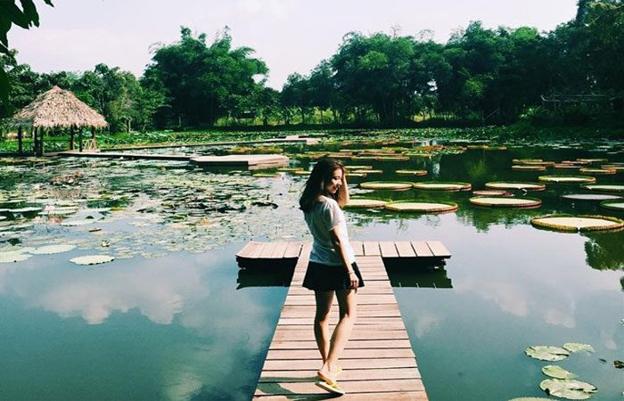
Thời tiết là một trong những yếu tố ảnh hưởng đến chuyến du lịch Đồng Tháp của các bạn, trước khi lên đường, bạn nên theo dõi dự báo thời tiết tránh đi đúng lúc trời mưa to, sẽ làm gián đoạn cuộc vui của các bạn.
Đồng Tháp có khí hậu được được đánh giá là dễ chịu và được phân làm 2 mùa mưa và khô. Mùa mưa bắt đầu từ tháng 5 – 11, cũng là lúc nhiều khách thăm quan Đồng Tháp đấy. Đây là điều khác biệt so với các địa phương khác, Lúc này đến với Đồng Tháp, du khách sẽ được chiêm ngưỡng cánh đồng sen bao la, những đoá sen nở rộ hương thơm ngát, cả một hệ sinh thái bừng tỉnh, tràn đầy sức sống.
Mùa khô bắt đầu từ tháng 12 – tháng 4 năm sau. Lúc này Đồng Tháp có một vẻ đẹp riêng biệt, trong những tháng giáp tết này, nhiều đoá hoa nở rộ, chào đón năm mới về, sự thu hút du khách nhất vẫn là thăm quan vườn quýt Lai Vung, thưởng thức những trái quýt ngon ngọt, tại đây bạn có thể cùng những người thân yêu chụp những tấm hình để lưu lại những khoảnh khắc đẹp nhất.
II. Hướng Dẫn Cách Đi Đến Đồng Tháp.
Phần lớn khách du lịch Đồng Tháp đến từ Tp Hồ Chí Minh, với quãng đường gần 150km, bạn có thể dễ dàng đi đến đây bằng nhiều phương tiện khác nhau. Với khách từ phương xa như Hà Nội, Hải Phòng, có thể mua vé máy bay đi đến sân bay Tân Sơn Nhất, tp Hồ Chí Minh (vì Đồng Tháp chưa có sân bay) rồi tiếp tục hành trình sau:
1. Xe khách.
Là một địa bàn phát triển du lịch nên có nhiều hãng xe lớn tại tp Hồ Chí Minh đang khai thác tuyến Sài Gòn – Đông Tháp như Komho, Phương Trang, Phú Vĩnh Long… Hiện giá vé dao động từ 100k – 150k và bạn có thể đến bến xe Miền Tây hoặc nhà chờ trên đường Lê Hồng Phong để mua vé.
2. Xe Máy, Ô tô
Là phương tiện được giới phượt thủ lựa chọn, với khoảng cách chỉ 150km là một chặng đường đi xe máy thích hợp, trên đường bạn có thể dừng lại bất cứ lúc nào, những nơi có cảnh đẹp, món ăn ngon để thưởng thức. Một mẹo khi đi lại là bạn có thể sử dụng định vị GPS trên điện thoại thông minh để khỏi bị lạc đường.
Bạn có thể đi theo lộ trình sau: tp Hồ Chí Minh – QL 1A – đi 16km đến Mỹ Yên – Vĩnh Lộc đi qua cầu Bến Lức – Đi tiếp 14km qua cầu Tân An, tp Tân An, tỉnh Long An – đến tỉnh Tiền Giang – đi 16km đến tp Mỹ Tho – rẽ phải đi theo đường QL 1A tầm 55km đến ngã 3 An Hưỡng rồi đi QL 30 – Đi 33km tới tp Cao Lãnh, tỉnh Đồng Tháp.
III. Khách Sạn Lý Tưởng Cho Khách Du Lịch Đồng Tháp.
Là một tỉnh có nhiều địa danh du lịch hấp dẫn, để có thể tận hưởng một kỳ nghỉ và có được chuyến du lịch trọn vẹn tại Đồng Tháp thì công việc đầu tiên của du khách sẽ là tìm đến khách sạn, nhà nghỉ để nghỉ ngơi, dưỡng sức.
Theo kinh nghiệm của Du Lịch Việt, bạn nên tìm đến những khách sạn, nhà nghỉ tại khu vực trung tâm tp Cao Lãnh hoặc gần điểm thăm quan để tiện bề cho việc đi lại, dưới đây là một vài khách sạn chất lượng bạn có thể liên hệ.
1. Khách Sạn Hương Sen.
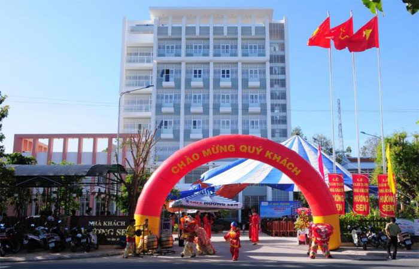
Là khách sạn được cộng đồng du khách đánh giá cao, nằm tại số 18, đường Võ Trường Toản, phường 1, tp Cao Lãnh, đây là vị trí trung tâm thành phố, tiện bề cho việc đi lại. Một điểm tốt cho nơi đây bởi nhân viên phục vụ chu đáo, tại đây bạn sẽ có những trải nghiệm cuộc sống bình dị, khách sạn có nhà hàng phục vụ các món ăn, quán bar ngoài trời, hồ trồng sen toả hương thơm ngát.
Tai đây du khách sẽ có cảm giác được hoà nhập vào thiên nhiên, thưởng thức các món ăn đặc trưng của 3 miền. Giá thuê phòng Khách sạn Hương Sen chỉ từ 300k – 1.200k/đêm.
2. Khách Sạn Sông Trà
Khách sạn đẩy tiện nghi, nằm tại địa chỉ 178 Nguyễn Huệ, phường 2, Cao Lãnh. Nằm gần khu di tích lăng mộ cụ Nguyễn Sinh Sắc, cách bảo tàng Đồng Tháp tầm 1km, nên được nhiều du khách chọn làm điểm dừng chân nghỉ ngơi trong hành trình khám phá Đông Tháp.
Sông Trà được thiết kế với 50 phòng nghỉ khang trang, có 5 loại phục vụ cho nhu cầu khách hàng. Giá thuê chỉ 490k- 1.150k vnđ/ngày, bên trong với đầy đủ tiện ích như tủ lạnh, két sắt, máy điều hoà, wifi…
3. Khách Sạn Bông Hồng.
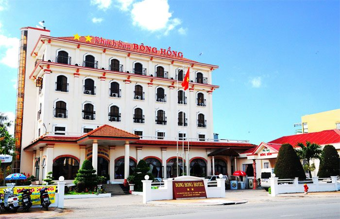
Là khách sạn được nhiều phượt thủ yêu thích, vì có giá cả phải chăng, chỉ tầm 300k – 600k vnđ/đêm. Toạ lạc tại số 251A đường Nguyễn Sinh Sắc, Phường 2, tp Sa Đéc. Khách sạn Bông Hồng tiêu chuẩn 2 sao có 2 nhà hàng, có thể phục vụ 1 lúc 700 khách, 1 phòng hội nghị 30 khách, bên cạnh đó còn có sân tenis, karaoke.
Một ưu điểm nữa của khách sạn Bông Hồng khiến thu hút du khách là cách nhà cổ Huỳnh Thuỷ Lê tầm 1km, làng hoa kiểng Tân Quy Đông tầm 3km, tại đây có 44 phòng phân làm 5 loại đáp ứng nhu cầu của nhiều đối tượng khách hàng.
IV. Hướng Dẫn Đi Lại Tại Đồng Tháp.
Đồng Tháp là tỉnh có hạ tầng ngày một phát triển, bạn có thể chọn một số phương tiện sau để đi lại.
– Xe Máy: Nếu bạn từ phương xa đến, trú ngụ tại khách sạn, nhà nghỉ tại Đồng Tháp, thì có thể liên hệ với phòng lễ tân nơi bạn đang cư trú để thuê xe máy giá tầm 120k – 150k vnđ/ngày. Nên khéo léo, mặc cả để có được giá tốt nhé.
– Taxi: Là sự lựa chọn tốt cho những khách đi theo nhóm, gia đình. Hiện có nhiều hãng taxi lớn đang hoạt động trên địa bàn tỉnh như: Taxi Vinasa Đồng Tháp – điện thoại: 0277.3.866.666; Taxi Mai Linh Đồng Tháp – điện thoại: 0277.3.68.68.68; Taxi Phú Vĩnh Long – điện thoại: 0277.3.869.222; Taxi Thanh Tùng – điện thoại: 0277.3.877.777
– Xe Lôi: Là một phương tiện đi lại khá thân thiện với môi trường, và khá quen thuộc ở Đồng Tháp, có dịp bạn trải nghiệm nhé.
– Tàu Thuyền: Tại tỉnh miền Tây sông nước, nhiều kênh rạch, bạn có thể thử cảm giác được di chuyển bằng thuyền là điều khá thú vị đấy.
V. Địa Điểm Du Lịch Đồng Tháp Không Thể Bỏ Qua.
Đồng Tháp với khí hậu trong lành, có nhiều điểm thăm quan phù hợp với từng mùa khác nhau. Với vẻ đẹp thiên nhiên mộc mạc thu hút. Dưới đây là một trong số địa điểm thăm quan không thể bỏ qua.
1. Khu Di Tích Xẻo Quýt
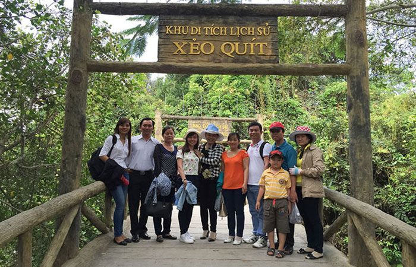
Là một địa danh du lịch được nhiều du khách yêu thích, nằm tại ấp 4, xã Mỹ Hiệp, huyện Cao Lãnh. Trước đây Xẻo Quýt là một căn cứ địa cách mạng của tỉnh uỷ Đồng Tháp lãnh đạo nhân dân đấu tranh chống giặc Mỹ vào năm 1960 – 1975.
Ngày nay khi đến với khu di tích Xẻo Quýt, bạn sẽ được chiêm ngưỡng hệ thống động thực vật phong phú, được thăm quan rừng tràm vào mùa nước nổi là điều nhiều du khách thích thú như chèo xuồng, thức thức cảnh đẹp thiên nhiên hoang sơ. Thực vật tại Xẻo Quýt có loài cây khá kỳ lạ là dây leo bòng bong đeo bám dày đặc tạo nên độ che phủ của khu di tích.
2. Du Lịch Sinh Thái Gáo Giồng.
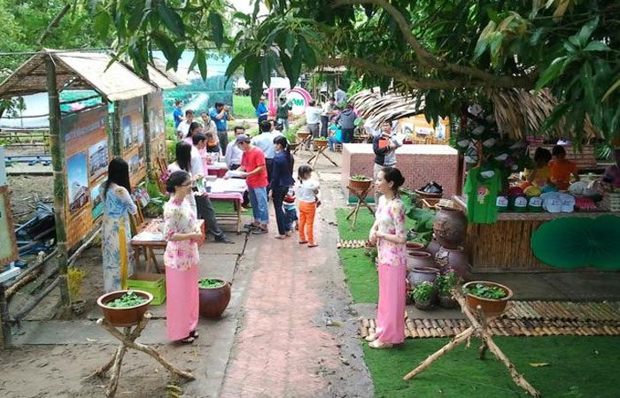
Là một khu di tích nổi tiếng, nằm trong rừng tràm nguyên sinh có diện tích tầm 1.700ha, nơi đây được xem là lá phổi của Đồng Tháp Mười. Toạ lạc ấp 6, xã Gáo Giồng, huyện Cao Lãnh.
Với hệ thống động thực vật đa dạng, Gáo Giồng còn được đặt với tên gọi khác là “ốc đảo xanh” theo sự cảm nhận của du khách cảnh vật thiên nhiên Gáo Giồng đẹp nên thơ, quyến rũ, gồm 250ha rừng nguyên sinh, có nhiều cây xanh như lau, sậy, sen, bàu đầy,… cạnh Gáo Giồng là ngôi nhà chung của nhiều loài chim: mồng đỏ, cồng cộc, le le, vịt trời…
Tại Gáo Giồng bạn sẽ có những trải nghiệm khó quên về khung cảnh thanh bình, tĩnh lặng, được lênh đênh trên xuồng ba lá, khám phá rừng tràm bằng xe đạp, thưởng thức những món ăn ngon đặc sản miền tây đặc sắc như rau mát, rắn nướng, bông hoa súng…
3. Đồng Sen Tháp Mười.
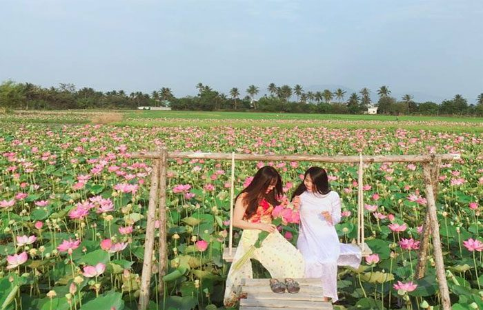
Là một khu vui chơi nghỉ dưỡng, vô cùng lý thú trong chuyến du lịch Đồng Tháp. Nằm tại xã Mỹ Hoà, huyện Tháp Mười, tp Cao Lãnh. Nơi đây từng thu hút không biết bao nhiêu cặp tình nhân đến thăm quan, nghỉ dưỡng, tìm về những khoảng không gian yên tĩnh bên nhau.
Tại đồng Sen Tháp Mười, có cái không khí êm dịu thanh bình, hoà vào thiên nhiên thanh tao, giữa cánh đồng sen bao la nở rộ hương thơm ngát, khiến tâm hồn du khách cảm thấy dễ chịu vô cùng.
Tại đây du khách có thể chèo xuống cùng người yêu ra giữa cánh đồng sen, thả hồn giữa thiên nhiên bao la, hít thở bầu không khí trong lành là sẽ cảm thấy bồi hồi lâng lâng.
4. Vườn Quốc Gia Tràm Chim.
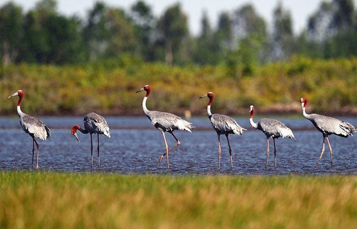
Là một địa điểm du lịch hấp dẫn nằm tại ấp 4, thị trấn Tràm Chim, huyện Tam Nông. Tràm Chim nằm trên khoảng diện tích 7612ha, của 5 xã: Tân Công Sính, Phú Thọ, Phú Đức, Phú Thành, Phú HIệp và thị trấn Tràm Chim.
Đến với Tràm Chim du khách sẽ được chiêm ngưỡng cảnh quan hệ sinh thái vô cùng phong phú, có 130 loài thực vật đa dạng, hàng trăm loài động vật xương sống, hàng chục loài cá, hơn 198 loài chim quý hiếm đặc biệt như: siếu cổ trụi, te vàng, ngan cánh trắng, già đãy java…
Để khám phá vườn quốc gia Tràm Chim một cách trọn vẹn, bạn có thể đến vào mùa nước nổi, lúc này khung cảnh ngập nước, cây cối xanh tươi, hoa sen, hoa súng đua nhau khoe sắc, sản vật tràm chim dồi dào âm thanh nhiều loài chim phát ra sống động.
5. Làng Hoa Kiểng Sa Đéc.
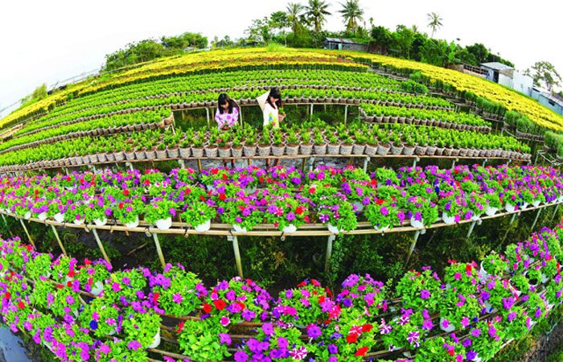
Là địa điểm thu hút nhiều du khách thăm quan, đặc biệt là những người yêu thích cây kiểng. Nằm tại xã Tân Quy Đông, tp Sa Đéc. Làng hoa này có tuổi thọ trên 100 năm, nổi tiếng khắp nước là nơi trồng và những nghệ nhân nơi đây tạo hình những giống cây trồng một cách độc đáo như: kim quýt, nguyệt quới, mai chiếu thuỷ, mai vàng… cung cấp cây kiểng cho thành phố.
Có dịp du lịch Đồng Tháp bạn hãy ghé đây thăm quan, chụp hình cùng với những người thân yêu.
6. Chùa Phước Kiển.
Là một ngôi cổ tự đặc sắc, chùa còn có tên gọi là chùa Lá Sen, toạ lạc tại xã Hoà Tân, huyện Châu Thành. Chùa mang hình dáng, kiến trúc độc đáo đậm dấu ấn phật giáo tại miền Tây.
Đến với chùa Phước Kiển, du khách sẽ bị thu hút bởi những chiếc lá sen khổng lồ, đường kính 1,5m – 2m, dày, gân to, mép cao 4 -5cm như một cái nia. Là sen này có thể chịu được sức nặng 70kg, nhưng không hề có giá đỡ là một điều khó tin phải không nào.
Chùa Phước Kiển hiện là được nhiều bạn trẻ, du khách đến thắp nhang, thư giãn, trong không khí thanh tịnh, trong lành có dịp bạn hãy ghé nhé!
7. Nhà Cổ Huỳnh Thủy Lê.
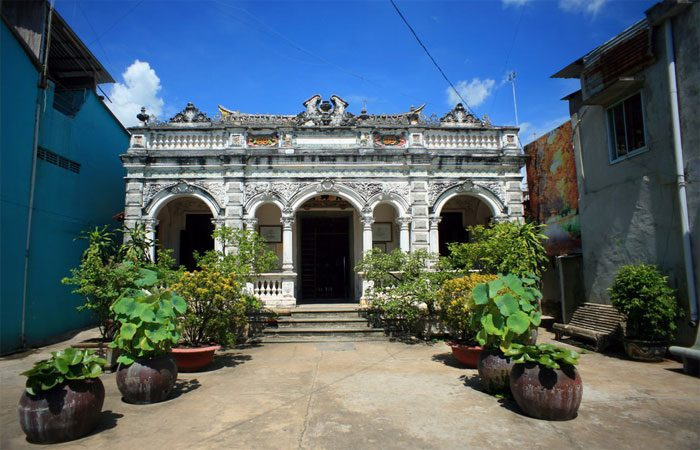
Là điểm thăm quan được nhiều du khách lựa chọn trong chuyến hành trình du lịch Đồng Tháp. Nằm tại địa chỉ số 255A Nguyễn Huệ, p2, tp Sa Đéc.
Ngôi nhà là tổ hợp hài hoà giữa kiến trúc phương đông và tây, với những đường nét hoa văn, chạm trổ tinh tế. Khi thăm quan nhà cổ Huỳnh Thuỷ Lê du khách sẽ thấy hai bên đầu là những thiết kế phá cách hình vòm cung có hình thuyền tượng trưng cho vẻ đẹp sông nước Tây Nam bộ.
Nhiều du khách cảm thấy cuốn hút bởi ngôi nhà cổ này còn lưu giữ lại câu chuyện tình thấm đẫm nước mắt của cô gái Pháp và chàng công tử người Việt gốc HOa giàu có vào năm đầu thế kỷ 20.
VI. Đặc Sản Hấp Dẫn Khách Du Lịch Đồng Tháp.
Với nhiều khách du lịch Đồng Tháp, ngoài được chiêm ngưỡng vẻ đẹp thanh bình của cánh đồng Sen, hay thăm quan các di tích lịch sử nổi tiếng ra thì đặc sản Đồng Tháp cũng mang nhiều tinh hoa đặc sắc đấy.
1. Nem Lai Vung.
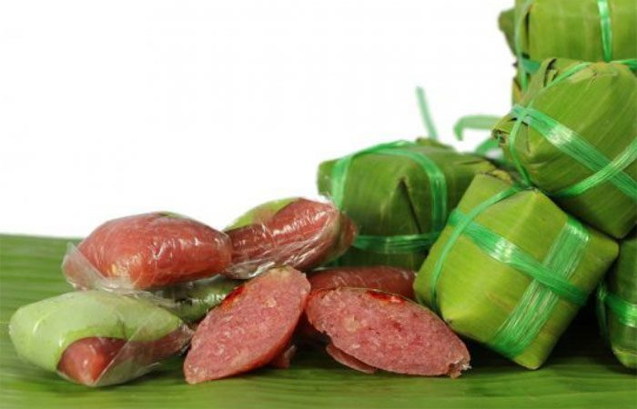
Là món ăn thu hút được nhiều du khách yêu thích, thường mua về làm quà tặng người thân. Món Nem Lai Vung vị ngon ngọt chua thật đúng với câu “thơm nồng mà say” của trong lời bài hát khi mô tả về món nem trứ danh này.
Để thưởng thức nem Lai Vung, bạn có thể ghé xã Tân Thành, huyện Long Hậu và thị trấn Lai Vung đây là làng làm nem truyền thống với tuổi đời trên 60 năm.
2. Chuột Xào Xả Ớt.
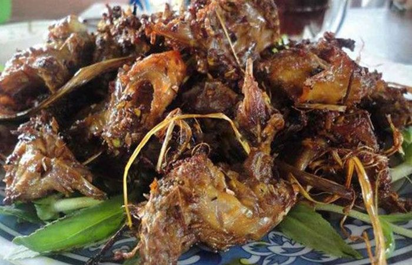
Khi người dân thành phố lần đầu nghe thấy món ăn này sẽ tỏ vẻ ngạc nhiên, chuột sao lại có thể làm món ăn được. Nhưng đây là những chú chuột đồng, chúng thường đào ổ dưới ruộng, thường ăn lúa, nên thịt chúng khi nướng lên thơm lừng, những con chuột đồng béo ngậy khi xào xả ớt hoặc lá cách thì vô cùng hấp dẫn. Có dịp bạn hãy thưởng thức nhé.
3. Hủ Tiếu Sa Đéc.
Trong các món hủ tiếu mà tôi từng ăn thì hủ tiếu Sa Đéc là ngon nhất, sợi hủ tiếu ở đây mềm, vừa đủ, vị gạo ngọt bùi. Sự tinh tuý của món hủ tiếu Sa Đéc ở nước dùng ở đây đặc biệt. Nước dùng ngọt thanh, khi ăn hủ tiếu, bạn nên ăn cùng với giò chá quẩy sẽ vô cùng hấp dẫn đấy.
4. Lẩu Cá Linh Hoa Điên Điển.
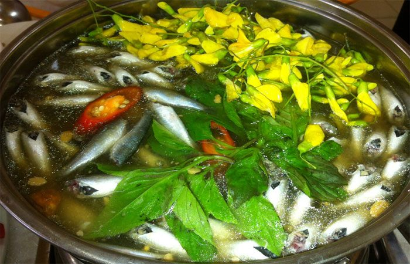
Khi bạn đến với Đồng Tháp vào mùa nước nổi, cũng là mùa cá linh về, những chú cá này được nhà hàng địa phương bắt và làm món lẫu ngon bá cháy, cá vào mùa này ngon bởi không quá già xương chưa cứng, cá rắn rỏi. Món cá Linh thật xứng danh với “hương đồng cỏ nội”.
Ngoài những địa điểm du lịch Đồng Tháp và những món đặc sản Đồng Tháp hấp dẫn trên, còn nhiều điều kỳ bí hấp dẫn khác đang chờ các bạn đến khám phá. Quý khách hãy đồng hành cùng với Du Lịch Việt nhé!